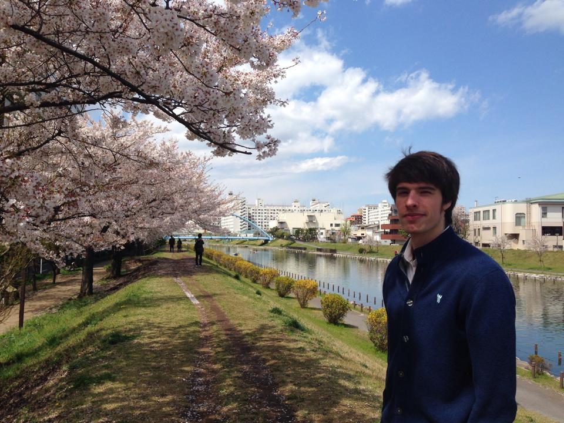

Hi, my name is Daniel Woznicki. I'm currently a student learning web development at Dev Bootcamp. I live in the San Francisco Bay Area, near Richmond.
I went to college at a small, liberal arts university up in Oregon called Willamette University. There, I got a degree in Rhetoric and Media Studies. From there, I promptly moved to Japan where I lived and taught English for 3 years, and after to Mexico to teach for 1 year.
My interests include, but are not limited to:
- Coding: This is a pretty new interest of mine, but I'm really enjoying coding so far. It's a lot of fun to figure out ways to solve a problem using a set of tools and logic.
- Gaming: I've always enjoyed playing games, though I must confess I'm more of a spectator than a player these days. I plan to make a simple game or two of my own.
- Soccer: I played soccer for many years, and still enjoy playing when I can. In contrast to gaming, I've never gotten into watching professional soccer.
- Japan: I like many Japanese things, as it turns out. I like Japanese manga, anime (to a lesser extent), food, the language, aesthetics, culture (mostly), and so on.
- Drawing: Though I'm not very good at it, I've always enjoyed drawing. I have a comic sort of style.
Also, this is my leopard gecko, Ken. While living in Japan, I had two leopard geckos, Ken and Hana. Ken and Hana were wonderful pets, and even now hold a place in my heart. They were mild-mannered, curious, and very cute companions. I was quite sad to say goodbye to them, and hope to get more leopard geckos soon!